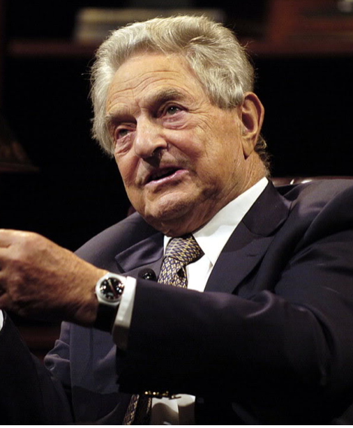

|  |
|
Джордж Со́рос (настоящая фамилия — Шварц (Schwartz); родился 12 августа 1930, Будапешт) — американский финансист, инвестор. |
|
Вступление Один из крупнейших в мире финансистов. Известен как человек, обрушивший в 1992 году банк Великобритании. Значительную часть своего состояния израсходовал на различные некоммерческие проекты, в частности на развитие институтов "открытого общества" в Восточной Европе. |
|
Принцип жизни: Мой принцип состоит в том, чтобы, прежде всего, стремиться выжить, а уж потом заработать. Как Джордж Сорос обрушил банк Великобритании Это случилось в среду, 16 сентября 1992 года. В этот день произошло резкое удешевление фунта стерлингов. Относительно немецкой марки цена снизилась с 2,77 до 2,70 GBP/DEM (−2,52 %). Относительно доллара США цена снизилась с 1,86 до 1,78 GBP/USD (−4,49 %). За несколько лет до того, Джордж Сорос спланировал операцию, скупал фунты стерлингов небольшими партиями, а затем, используя сформированные валютные резервы, фонда Джорджа Сороса «Quantum» одномоментно продал около 5 млрд фунтов в обмен на 15 млрд немецких марок по курсу 2,82 GBP/DEM. Цена фунта стерлингов устремилась вниз. Последующая обратная покупка подешевевших фунтов через день позволила Джорджу Соросу заработать, по разным оценкам, 1—1,5 млрд. долларов. Джордж Сорос не был единственным «виновником» девальвации фунта стерлинга, однако именно он получил титул «человека, сломавшего Банк Англии». С тех пор эта среда стала монохромной – в историю она вошла как «черная», а сам Сорос называет её «белой». |